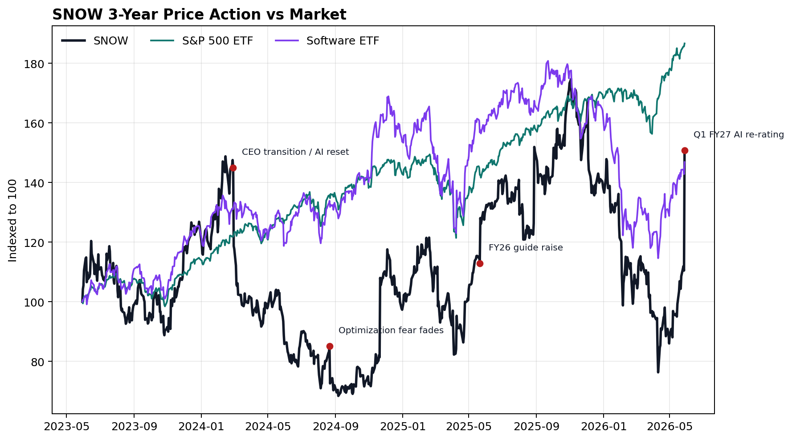
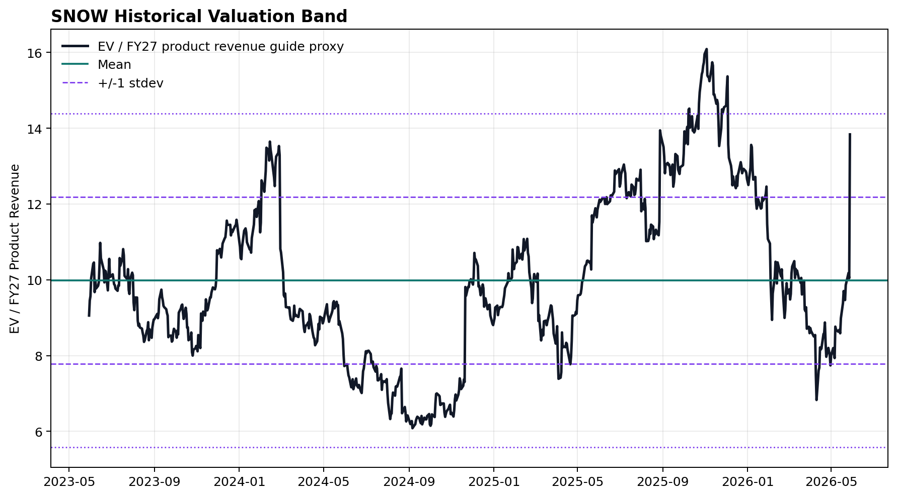
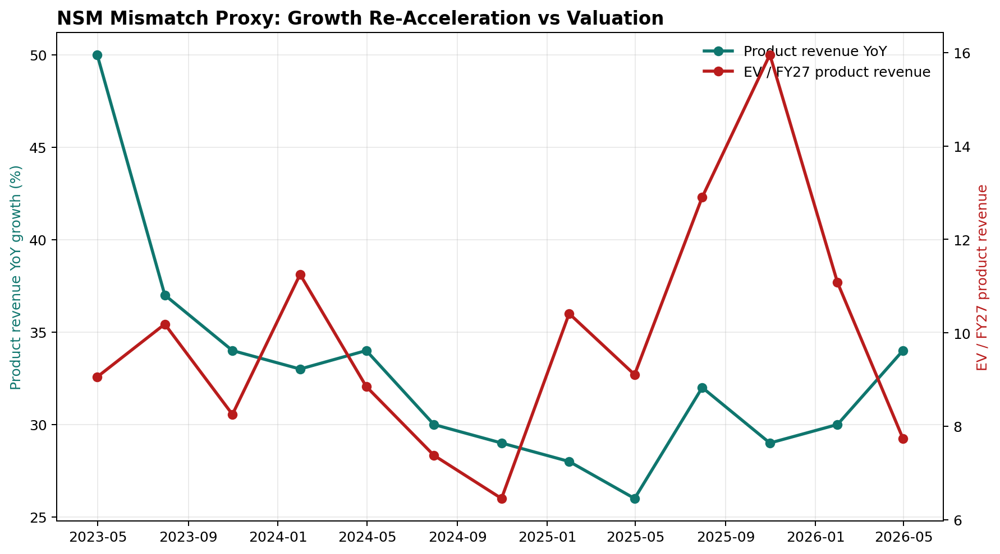

Ticker: SNOW
Date: 2026-05-29
Classification: Advance to next-stage research, valuation-sensitive
结论：Snowflake 值得进入下一阶段研究，但不是因为 Q1 FY2027 后股价仍便宜，而是因为市场的定价锚可能正在从“高估值消费型数据仓库”切换到“企业 AI 工作流控制面”。5 月 27 日财报把这个转换推到台前：Q1 产品收入 13.34 亿美元，同比 34%，NRR 回升到 126%，FY27 产品收入指引从 56.6 亿美元上调到 58.4 亿美元，且管理层明确把增量归因于核心平台加速和 Cortex Code、Snowflake Intelligence 的可观察消费。
这不是干净的便宜股。5 月 28 日收盘价 239.20 美元，单日上涨约 36%，基于当前股本和净现金估算的 EV/FY27 产品收入约 13.8 倍，已经回到三年估值区间上半部。错误定价的机会只在一个更窄的问题上：如果 AI 产品不是一次性消费脉冲，而是让 Snowflake 从数据仓库预算进入 AI 开发、迁移、治理和业务动作预算，那么市场用 EV/Sales 对近端增长斜率定价仍偏短视。
| Source Category | Latest Source Date | Freshness Status | Age vs. Report Date |
|---|---|---|---|
| Sell-side reports | 2026-05-28 public target updates; local reports through Q1 FY27 preview | Mostly current | 1 day for public updates; local bank PDFs lag latest print |
| Earnings call transcript | FY2027 Q1, 2026-05-27 | Current | 2 days |
| SEC filings | 8-K 2026-05-27; 10-K filed 2026-03-20 | Current for earnings, annual risk factors current | 2 days / 70 days |
| Buy-side reports | 2026-04-29 general regime note; Snowflake-specific 2026-02-26 | Useful but partly pre-Q1 | ~1 to 3 months |
| Item | Latest Situation |
|---|---|
| Market Data & Positioning | 收盘价 239.20 美元，52 周区间约 121.11 至 277.14 美元，市值约 829 亿美元。按约 21 亿美元净现金估算，企业价值约 808 亿美元。空头股数约 1,947 万股，约为流通股 5.8%。 |
| Key Financial Metrics | Q1 FY2027 产品收入 13.34 亿美元，同比 34%；总收入 13.91 亿美元，同比 33%；RPO 92.1 亿美元，同比 38%；$1M+ 客户 779 家；NRR 126%；非 GAAP 经营利润率 12%。FY27 产品收入指引 58.4 亿美元，同比约 31%。 |
| Price Action & Technicals | 30 日技术序列显示股价从 4 月底低位 136.47 美元快速上行到 239.20 美元，5 月 28 日放量突破。RSI 84.9，MACD 显著转正，价格大幅高于 50 日 EMA，动量强但短线过热。 |
| Positioning | Q1 回购约 3 亿美元股票，剩余授权约 8 亿美元。市场共识在 Q1 后快速上调，S&P Global 聚合 51 名分析师平均目标价约 274 美元，中位数 282 美元。 |
| Key Metric | Value | Implication |
|---|---|---|
| Product revenue growth | 34% | 从 FY26 Q1 的 26% 和 FY26 Q4 的 30% 再加速，市场原先的“优化后低斜率”锚被打破。 |
| NRR | 126% | 消费模式恢复健康，AI 和迁移工作负载正在补回此前优化压力。 |
| AI adoption | 13,600+ AI accounts; COCO 7,100+ | AI 不只是销售叙事，已经进入可计量消费和平台活跃度。 |
| FY27 operating margin guide | 13.5% | 管理层称 AI 毛利率较低，但 AWS 成本和内部 AI 效率可抵消，利润率担忧暂时缓解。 |
Pricing Anchor & Embedded Expectations: 卖方主要尺子仍是 EV/Sales 或 EV/FCF/G。Bernstein 在 2 月用约 13 倍 P/S 得到 237 美元目标价，GS 使用 DCF 与 15.5 倍 EV/Sales 混合框架，MS 用 CY30 FCF 折现和约 34 倍 EV/FCF。Q1 后公开调价显示 Stifel/Needham 到 300 美元、BTIG 到 280 美元、JMP 到 325 美元、Monness 到 320 美元。市场锚已经从“是否继续减速”转到“AI 能否支撑 25% 以上中期产品收入增长，并让 FCF 杠杆兑现”。
Embedded expectations: 以当前约 808 亿美元 EV 和 FY27 产品收入指引 58.4 亿美元计算，SNOW 交易在约 13.8 倍 EV/FY27 product revenue。若用 S&P Global 聚合 FY27 总收入 60.3 亿美元，约 13.4 倍 EV/FY27 revenue。这个价格已经要求 FY28 继续 20% 以上增长，并且非 GAAP OPM/FCF margin 继续向高 teens 或 20%+ 推进。
| Company | Market Cap | EV/Sales | Forward P/E | Revenue Growth | Margin / FCF |
|---|---|---|---|---|---|
| SNOW | $82.9B | ~13.8x FY27 product rev | ~92x | 30.1% TTM / 31% guide | 23% FY27 adj. FCF margin guide |
| DDOG | $80.2B | 20.9x TTM | 79x | 32.2% | Positive GAAP margin, high reinvestment |
| MDB | $26.2B | 9.7x TTM | 46x | 26.7% | Near breakeven operating margin |
| PLTR | $343.6B | 64.3x TTM | 69x | 84.7% | 46.2% operating margin |
Historical Context & Charts: 图 2 的估值带使用日频股价、当前股本、约 21 亿美元净现金和 FY27 产品收入指引构造 EV/Product Revenue 代理。它不是精确的逐日 NTM 共识序列，但能显示市场愿意为同一 FY27 收入基准支付的倍数变化。



NSM Framework:
| Lens | Assessment |
|---|---|
| CEO NSM | “可治理的数据到可执行动作”的生产速度。公开代理指标包括 deployed use cases、Snowflake Intelligence/COCO 使用账户、数据分享客户比例和大客户迁移周期缩短。 |
| Long-term investor NSM | 高质量消费收入的可持续复利，核心指标是产品收入增长、NRR、$1M/$10M 客户、RPO、产品毛利率和 FCF margin 的组合。 |
| Market-consensus NSM | EV/Sales 对产品收入增长的敏感度，辅以 FCF/G。市场仍用“增长斜率乘以利润率可信度”给倍数。 |
| Mismatch category | Healthy lag, partly closing. Q1 已让滞后开始修复，但市场还没有完全证明愿意把 Snowflake 当作企业 AI 控制面定价，而不是数据仓库再加速。 |
治理数据基础 → 更快迁移和开发 → 更多生产用例上线 → 组织工作流依赖 Snowflake → 消费收入扩张 / NRR 稳定 / AI 产品附加收入 → FCF 杠杆与估值重估
Upside/Downside Asymmetry: 上行来自两个层次。第一，FY27 指引仍可能被“观察到的 COCO 行为”继续上修。第二，如果 Snowflake Intelligence 与 Cortex Code 成为迁移和应用构建入口，FY28 收入增长和 FCF 率可能同时高于当前共识。下行也清楚：AI 产品毛利率较低，AWS 等 hyperscaler 既是供应商也是竞争者，Databricks 在非结构化、实时和 AI-native 数据工程上仍有强势叙事。如果 Q1 是一次性 token/agent 消费脉冲，13 倍以上前瞻销售倍数并不宽容。
Classification: Advance to next-stage research, valuation-sensitive.
Wrong anchor: 有。市场在 Q1 前更像是在惩罚消费软件减速和 SaaS 被 AI 替代的风险，但本季度显示 AI 正在推动迁移、开发、支持和业务查询消费，错误锚从“AI 威胁”转向“AI 增量消费”。
Material upside from being right: 有但不无脑。若 FY28 仍能 25% 左右增长，且 OPM 向 16% 至 20% 走，当前 13.8 倍 FY27 产品收入可以被更高收入基数和 FCF 转化吸收。若只是 FY27 一次性上修，Q1 后的 36% 股价跳升已经吃掉大量容易的钱。
Clear validation path: 有。未来两个季度看 COCO/Snowflake Intelligence 账户增长、AI 产品收入披露、NRR、RPO、产品毛利率是否保持 75% 指引，以及 Q2/Q3 是否继续 beat and raise。
Confirming datapoints
Breaking datapoints